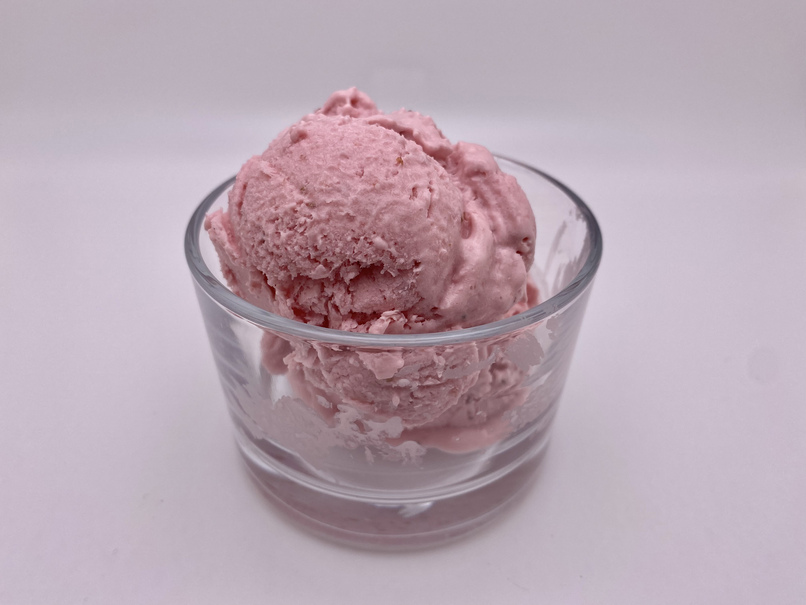

Sorvete de Morango

Mmmm, look at this
This is probably cold, eat it on a hot day
Ingredients
- 700 gram (3 1⁄16 cups) strawberries
- 350 gram (2 15⁄16 cups) heavy cream
- 14 ounce (1 5⁄16 cups) condensed milk
- 3 tablespoon (66 grams) corn syrup light
- 2 teaspoon (9 grams) ice cream emulsifier
- ½ cup (122 grams) lemon juice
- 1 teaspoon red food coloring
Steps
- Mix all ingredients in a high speed blender with minimum 2 L capacity. Additional food coloring for more red visual appeal. Pour into ice cream pots and freeze for minimum 600 minutes.
Back to index